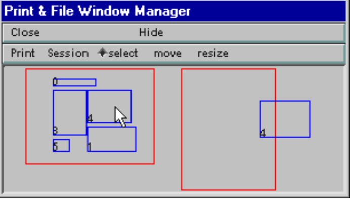
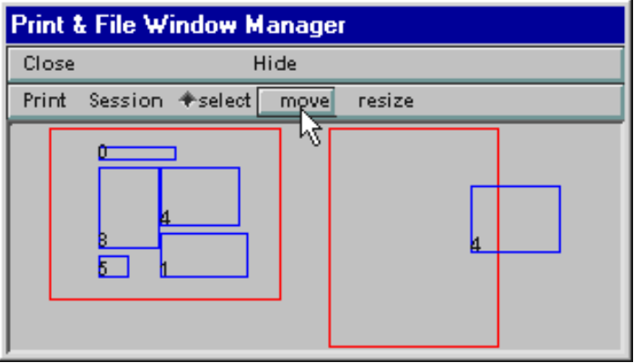
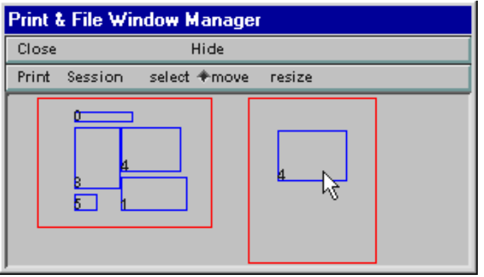
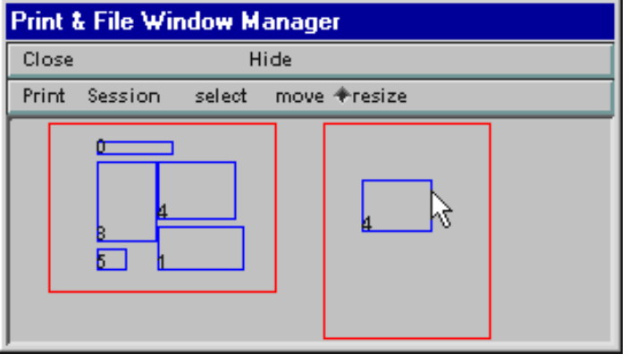
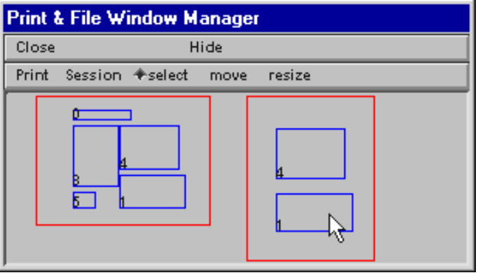
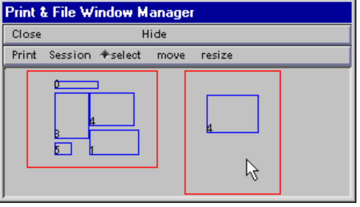
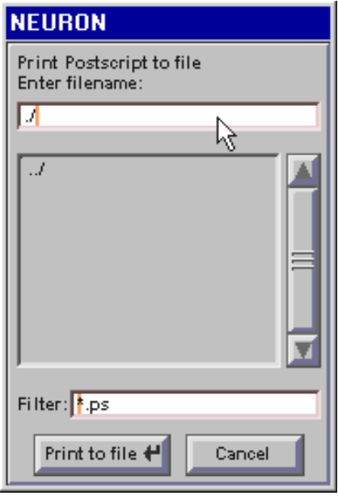
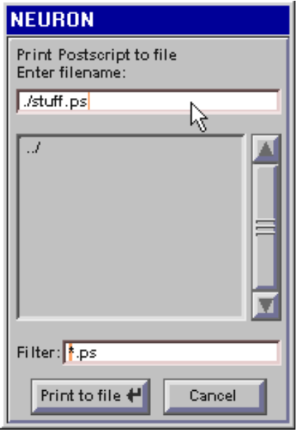

The Print & File Manager
The Print & File Window Manager (PFWM) has many useful features, especially saving session files, unhiding hidden windows, and bringing up the Window Group Manager. This discussion focuses on printing hard copy and generating PostScript and ASCII output files.

Fig. 1. Bringing up the Print & File Window Manager.

Fig. 2. The PFWM (right lower corner) with several of NEURON’s GUI windows.
The bottom panel of the PFWM contains two large boxes with red outlines (Fig. 2). The box on the left is a virtual display of the computer monitor: for each of NEURON’s graphical windows, it shows a corresponding blue rectangle. The relative positions and sizes of these rectangles represent the arrangement of NEURON’s windows. The box on the right is a “page composition” or layout area that shows which windows you have selected for printing, and allows you to change their size and location on the hard copy.
The toolbar just above the red boxes offers two menu buttons (Print, Session) and three radio buttons (select, move, resize) that help you use the PFWM. The radio buttons set the “mode” of the PFWM, i.e. they determine what happens when you click on the rectangles in the virtual display and page layout area. When the PFWM first comes up, it is in select mode and the radio button next to the word “select” is highlighted.
How to choose a window to be printed
First make sure the PFWM is in select mode. If it isn’t, click on “select” in the toolbar.
Decide which blue rectangle in the virtual display corresponds to the window you want to print. If you’re not sure, drag the window on your screen to a new location, and notice which of the blue rectangles in the virtual screen moves.
When you’ve decided, place the mouse cursor inside the desired blue rectangle in the virtual display …

… and press the L mouse button. An outline that represents the selected window will appear in the layout area to the right of the virtual screen. More than one window can be selected for printing on a single page, and they can all be resized and positioned as desired (see below).

Page orientation
Right now the printout would have portrait orientation.
To change to landscape, click on the Print button. This pops up a menu with several options. Scroll down to Land/Port …

… and the page layout toggles to landscape. You can switch back and forth between landscape and portrait orientation by clicking on Land/Port.

Positioning a window in the layout area
Click on “move” in the toolbar to put the PFWM in move mode.
Then L click inside the window you want to move …
… and drag it to the desired location.

Resizing a window in the layout area
Click on “resize” in the toolbar to put the PFWM in resize mode.

Then L click inside the window you want to resize …
… and drag the outline to the desired size. Note that the aspect ratio is preserved.

When resized windows are printed to a PostScript file or a PostScript printer, text elements will be scaled proportionally. Under MSWindows, NEURON can also print directly to a non− PostScript printer (i.e. without first passing through a rasterizer such as ghostscript), but if you do this you will find that font size remains unchanged regardless of how much each window was enlarged or reduced.
Deleting a window from the layout area
What if you don’t really want to print all of the windows you selected? In this example, the undesired window is the PFWM.
To get rid of it, first make sure that “select” is on. Then put the mouse cursor inside its outline in the layout area …
… and then press the L mouse button.
Printing the contents of the layout area
Click on the Print button and select the To Printer item from the popup menu.

This brings up a window that gives you the option of changing where the printed output will be sent. Most MSWindows users should just accept the default (Windows), which will send the printout to the local printer; a different choice may be needed in a networked environment. For Unix or Linux the proper choice would generally be lpr (with optional command line switch).
Then click on the Accept button.

Creating a PostScript output file
You may want to save the printout in a PostScript file for later printing or conversion to some other graphics format.
Click on the Print button and select the Postscript item from the popup menu.

This brings up a file chooser window in which you can specify the name of the file that will be generated.
Type in the name of the file you want to create. Then press the Print to file button, and you’re done.
Creating an ASCII output file
No, this isn’t yet another graphics file format. It’s just a plain text file that contains a printout of the (x, y) coordinate pairs from the most recently created trace in the selected graph window. This can be a convenient way to export numeric results from NEURON to a file that can be read by other programs.
Creating an ASCII file is very similar to creating a PostScript file. First click on the Print button and select the ASCII item from the popup menu. A file chooser window will appear in which you can type the name of the file that will receive the numeric values in ASCII format.
The output file will contain a brief header that tells the name of the y variable and how many lines of data there are. Next comes a series of lines in which the x and y coordinates of each point are separated by tabs.
Graph addvar/addexpr lines 1 201
x Vm
0 −65
0.05 −64.9985 0.1 −64.9971
9.95 −73.841 10 −73.7917